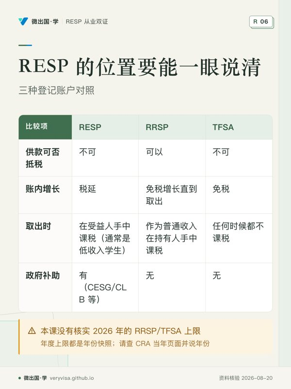
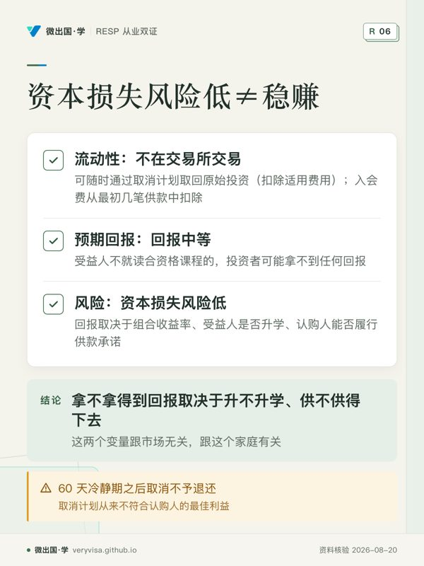

🃏 Flashcards · 3 闪卡 · 3 张 🖼 Slides · 2 幻灯 · 2 页 ✍️ Questions · 6 刷题 · 6 道
经济与市场 Economy & Markets P2 稳住 P2 Hold steady
ZH EN ZH + EN
先看这一章怎么考 First, how this chapter is tested
定义排除题：最常考 GDP（国内生产总值）不包含什么（转移支付、企业买原材料及家务劳动都不算），以及衰退（至少连续六个月经济收缩）与经济周期（4至7年）的固定定义。 Definition and exclusion questions: Most frequently tests what Gross Domestic Product (GDP) excludes (transfer payments, raw materials purchased by businesses, and homemaker productivity are all excluded), as well as the standard definitions of a recession (at least six consecutive months of economic contraction) and the business cycle (typically fluctuating over 4 to 7 years). 反向与方向传导题：考高通胀对消费行为的影响（促使当下消费而非储蓄）、利率升降对国内支出/储蓄与加元汇率/进出口的四个传导方向，以及市场利率与已发行固定收益证券价格的反向关系。 Inverse and transmission direction questions: Tests the impact of high inflation on consumer behavior (encouraging spending now rather than saving), the four transmission directions of interest rate changes on domestic spending/saving and the Canadian dollar exchange rate/trade (exports vs. imports), and the inverse relationship between market interest rates and the market value of existing fixed-income securities. 双栏对比归属题：把政府财政政策（税收与支出、时滞不确定）与加拿大央行货币政策（调节货币量与短期利率、1%至3%通胀控制目标、18至24个月时滞）混在同一道题的四个选项里考归属。 Policy tool classification and comparison questions: Tests the distinction between government fiscal policy (taxation and government spending, with unpredictable time lags) and Bank of Canada monetary policy (regulating money supply and short-term interest rates, maintaining a 1% to 3% inflation-control target, with an 18 to 24 month time lag) by mixing their tools and characteristics across the four options. 最常丢分的陷阱（看到题干信号就警觉） Traps that cost the most marks (watch for the signal in the stem)
GDP重复计算与转移支付陷阱 GDP Double-Counting and Transfer Payment Trap 题干问 Which of the following is included in / excluded from GDP，选项出现 transfer payments、raw materials 或 homemaker productivity。 The question stem asks which item is included in or excluded from GDP, with options featuring transfer payments, raw materials, or homemaker productivity. 通胀与利率方向反推陷阱 Inflation and Interest Rate Direction Reversal Trap 题干出现 high inflation、interest rates rise/fall 或 long-term bond prices，选项描述 saving vs. spending、exports vs. imports 或 bond market value。 The question stem contains high inflation, interest rates rise or fall, or long-term bond prices, with options describing saving vs. spending, exports vs. imports, or bond market value. 财政与货币政策串位陷阱 Fiscal vs. Monetary Policy Confusion Trap 题干问 Fiscal policy 或 Monetary policy / Bank of Canada 的职责、工具或时滞（18 to 24 months）。 The question stem asks about fiscal policy, monetary policy, or the responsibilities, tools, or time lag (18 to 24 months) of the Bank of Canada. 本章考点页：导图、要点表、7 道带逐项解析的练习 →
考试口径最后两章（ch14 The Economy、ch15 Understanding Financial Markets）合计约占卷面 11% ——按 Learnedly 章节练习题量，两章各 8 题，合 16 题。
它们是全书里最像通识课、最不像 RESP 的两章，也最容易被跳过。但这 16 题几乎全是送分题 ，形态高度固定（定义对应、方向对应、档位对应），投入产出比是全书最高的一段 。这一篇不讲全宏观经济学，只把会考的东西按考试的问法组织一遍。
它为什么放进一门销售课 ：考试口径自己给的理由是——经济变化会影响客户、他们的投资、他们的风险承受能力和预期。落到你每天的动作上是三件事：KYC 的一半是风险承受能力 ；你要能解释计划把钱投在哪里 ；客户一定会拿 GIC、TFSA、共同基金跟你比 。
本节回答 This section answers 回答衰退定义、GDP排除项及高通胀如何改变消费行为 Define a recession, identify GDP exclusions, and explain how high inflation alters consumer spending behaviour. 本章考题 1 Question 1
1.1 周期与两个必背的数
经济在周期中运行，需求增加时扩张、萎缩时收缩。扩张期：就业上升、企业利润改善、税收增加；收缩期：消费减少、失业上升、工资利润停滞或下降、税收减少。
衰退（recession）＝ 至少连续六个月的经济收缩 ；经济周期常在四到七年之间起伏 ，且难以预测、更难控制 。
1.2 GDP：考点在「不包含」这一侧
定义 ：一个国家在给定时期内所生产的商品与服务的总价值 。包含 个人消费、政府支出、企业投资、净出口（出口减进口） ，以及企业投入新工厂建筑的钱。由 Statistics Canada 计算。
⚠️
三个最常见的干扰项
GDP 不包含 ：① 转移支付 （养老金、失业保险、福利金）；② 企业为生产最终产品而购买的原材料与服务 （为避免重复计算 ）。另有一个反复出现的错误选项：「GDP 衡量家庭主妇的生产力」——不衡量 。
考试口径给的规模快照 ：2022 年加拿大 GDP 约 2.14 万亿美元，全球第 8 。这是考试口径年份快照 ——考试按考试口径答，对客户讲请查当年 StatCan 数并注明年份。
1.3 产能、生产率、贸易
产能利用率 ：把某行业或公司的潜在产出与实际产出作比较 。接近满产通常更有效率，但逼近产能极限时价格趋于上涨，从而引发通胀 ；新增产能投资可缓解这种压力 。生产率 ：提升往往反映生产技术、科技与知识的改善，通常表现为更高的工资薪金与更低的商品服务价格 。出口增加 → 加拿大产业销售增加，且对加元的需求增加 （考点落在后半句）；进口增加 → 加拿大人把钱花到了别处 。CUSMA （加美墨协定）：创建了世界上最大的自由贸易区，2020 年 7 月 1 日生效 ；美国是加拿大迄今最大的贸易伙伴 。国际收支 ：记录加拿大与贸易伙伴之间的交易。经常账户 ＝商品服务贸易＋投资收益；资本与金融账户 ＝对外直接投资与对外国股债的投资。
1.4 通胀与 CPI
通胀 ＝ 一段时期内整个经济中价格的普遍上涨 ，最常用 CPI 的变化衡量。CPI 按月计算 ，方法是确定一篮子固定的、加拿大消费者通常购买的产品的成本 。
行为后果 ：通胀高时消费者知道东西在变贵，可能促使他们现在多消费而不是储蓄 ；多买又推高需求，可能演变成通胀螺旋 。
⚠️
「通胀高会鼓励储蓄」是错的
方向正好相反：高通胀鼓励当下消费 。同题另两个错误选项也要记：「通胀无法被可靠衡量」（错，CPI 就是）、「通胀率由央行每月设定」（错，央行设的是通胀控制目标，不是通胀率本身 ）。
央行通胀控制目标：一般在 1% 到 3% 之间。 超出年度目标 → 提高利率 压需求；低于 1% → 降低利率 刺激支出。
节末检索小测 · 先别往回翻，凭记忆作答 Quick recall check: answer from memory before scrolling back
When inflation rises sharply and consumers expect prices to keep climbing, how does consumer behaviour typically change according to economic principles?
当通胀急剧上升且消费者预计物价将继续攀升时，根据经济学原理，消费者行为通常会发生怎样的变化？
a Consumers tend to save more of their disposable income, which gradually cools down aggregate demand. ✗ 错误。这是「通胀与利率方向反推陷阱」：考试口径明确指出，「高通胀会鼓励储蓄」是错误的，方向正好相反，消费者知道东西在变贵会倾向于现在多消费而不是储蓄。 Incorrect. This is the Inflation and Interest Rate Direction Reversal Trap: The exam curriculum explicitly notes that believing high inflation encourages saving is incorrect; the opposite is true, as consumers knowing prices are rising tend to spend more now rather than save.
b Consumers tend to spend more now rather than save, which further drives up demand and can trigger an inflationary spiral. ✓ 正确。通胀（Inflation）高企时，消费者意识到商品和服务正在变贵，可能促使他们当下多消费而非储蓄；抢购推高需求，可能演变成通胀螺旋（Inflationary Spiral）。 Correct. When inflation is high, consumers realize goods and services are getting more expensive, which can prompt them to spend more now rather than save; this increased demand can trigger an inflationary spiral.
c Consumers wait for the central bank to set a new monthly inflation rate before making major purchases. ✗ 错误。这是「财政与货币政策串位陷阱」中的常见干扰项：加拿大央行（Bank of Canada）设定的是 1% 到 3% 的通胀控制目标区间，而不是每月设定通胀率本身；通胀由消费者价格指数（Consumer Price Index, CPI）按月衡量。 Incorrect. A common distractor in the Fiscal vs. Monetary Policy Confusion Trap: The Bank of Canada establishes an inflation-control target band of 1% to 3%, rather than setting the monthly inflation rate itself; inflation is measured monthly by the Consumer Price Index (CPI).
d Consumers shift spending entirely into imported goods, directly increasing domestic gross domestic product. ✗ 错误。进口增加意味着加拿大人把钱花到了别处，而在国内生产总值（Gross Domestic Product, GDP）中计算的是净出口（出口减进口），单靠进口增加不会直接推高本国 GDP。 Incorrect. An increase in imports means Canadians are spending money elsewhere, and Gross Domestic Product (GDP) includes net exports (exports minus imports), so an increase in imports alone does not directly raise domestic GDP.
看答案与每个选项的解析 Show the answer and why each option is right or wrong 答案 Answer ：b
本节回答 This section answers 回答财政与货币政策的分工、时滞及利率对汇率与贸易的影响 Explain the division of responsibilities and time lags of fiscal and monetary policy, along with the effects of interest rates on exchange rates and international trade. 本章考题 2 Question 2
这是 ch14 的核心对照，几乎每种题型都出一道。
加税 vs 减税 ：加税从经济中抽走资金，减少消费者可用于消费或储蓄的钱；减税把钱放回消费者手中，倾向于刺激经济。
央行四项职责 ：促进金融体系的安全与效率；供应加拿大的纸币 ；为政府提供资金管理服务；执行货币政策以增强对货币价值的信心。
利率变动的四个方向 （必须能瞬间答出，别现推）：
考试口径收尾还有一句把两章连起来的话：对加拿大商品服务的强劲需求，若超出经济产能，就会对价格形成上行压力。 ——产能是通胀的物理天花板，利率是调节需求撞不撞到天花板的旋钮。
🔧
现行利率与通胀数请当场查，别背
1%–3% 是目标区间 （制度设定，稳定）；当期政策利率与当期 CPI 同比每月都在变 。本课没有核实过 2026 年的这两个数，因此这里不给数 ——给了就是编造。要用时查 bankofcanada.ca 与 StatCan 。考试考机制与方向，不考当期数值。
节末检索小测 · 先别往回翻，凭记忆作答 Quick recall check: answer from memory before scrolling back
If the Bank of Canada lowers short-term interest rates to stimulate a sluggish economy, what is the expected effect on the Canadian dollar and international trade?
如果加拿大央行降低短期利率以刺激低迷的经济，预计会对加元汇率和国际贸易产生什么影响？
a The Canadian dollar strengthens, which encourages exports and discourages imports. ✗ 错误。这是「通胀与利率方向反推陷阱」：短期利率下降会导致加元走低而非走高，且加元走高会抑制出口而非促进出口。 Incorrect. This is the Inflation and Interest Rate Direction Reversal Trap: Lower short-term interest rates lead to a weaker Canadian dollar, not a stronger one, and a stronger dollar dampens exports rather than encouraging them.
b The Canadian dollar weakens, which discourages exports and encourages imports. ✗ 错误。前半句加元走低正确，但后半句方向反了：加元走低会让加拿大商品对外国买家更便宜，从而促进出口（encourages exports）、抑制进口（discourages imports）。 Incorrect. While the first clause correctly notes that the Canadian dollar weakens, the trade direction is reversed: a weaker dollar makes Canadian goods cheaper for foreign buyers, thereby encouraging exports and discouraging imports.
c The Canadian dollar weakens, which encourages exports and discourages imports. ✓ 正确。在货币政策（Monetary Policy）传导中，利率下降会使国内支出增加、储蓄减少，同时导致加元走低，进而促进出口、抑制进口。 Correct. In monetary policy transmission, falling interest rates stimulate domestic spending, reduce saving, and weaken the Canadian dollar, which in turn encourages exports and discourages imports.
d The Canadian dollar remains unchanged because exchange rates are controlled only through federal fiscal policy. ✗ 错误。这是「财政与货币政策串位陷阱」：短期利率变动直接传导至加元汇率，属于加拿大央行货币政策的影响渠道，而非政府预算的财政政策（Fiscal Policy）。 Incorrect. This is the Fiscal vs. Monetary Policy Confusion Trap: Short-term interest rate shifts transmit directly to the Canadian dollar exchange rate through Bank of Canada monetary policy channels, not government fiscal policy budgets.
看答案与每个选项的解析 Show the answer and why each option is right or wrong 答案 Answer ：c
本节回答 This section answers 回答流动性、回报与风险关系、负担能力风险及风险承受力 Explain the relationships among liquidity, return, and risk, as well as affordability risk and risk tolerance. 本章考题 3 Question 3
图：经济与市场基础——GDP、利率、以及三个属性怎么排序
三条必须钉死的关系：① 预期回报率越高，风险越大 ——任何想赚超过无风险利率的人都得承担风险；② 在交易所上市有助于流动性，但不保证流动性 ；③ 有些证券受法律或合同限制数月甚至数年不得转售，或在想卖时根本没有市场。
投资者为什么能拿到回报 （风险溢价的最小完整表达）：一是因为让别人使用自己的钱而获得报酬，二是因为承担了该事业的部分风险而获得「风险溢价」。
⚠️
三个绝对化陷阱，全是错的
「共同基金总是 流动性很高」「上市保证 流动性」「流动性高的投资总是 更便宜」。ch15 第 1 题四个选项里三个是这类表述。看到「总是／保证／任何时候」，先降一档信任。
风险的八个成分
✕
最后一条是这个行业的专属风险，监管机构最盯它
考试口径：证券监管机构认为，认购人面临的一项重大风险，是他们可能因无力继续供款或其他原因而在计划到期前取消计划。 因此监管机构要求奖学金计划在「关系披露」文件与计划招股书（Plan Summary）中处理这个问题 。
你的义务是：在客户作出任何决定之前就谈这件事 ，说清提前取消的后果 ，并谈可缓解「被迫取消」的选项 ——那些选项写在招股书里，你必须知道你所卖计划的具体规则 。
风险承受能力（risk tolerance） ＝财务上承受风险的能力 ＋ 心理上接受风险的意愿 ，两个维度缺一不可。受年龄、健康、收入、净资产、财务需求、投资知识、情绪反应与安全感需要影响。
⚠️
考试口径那句最好用的话
一个投资者在财务上有能力承受损失，如果他会因为投资跌价而夜里睡不着，那这个能力就无关紧要。
它的实务形态是：客户嘴上说的和心里想的不是一回事。 考试口径点名了两种偏差——很多客户从没想过自己能承受多少风险 ，另一些会高估 （想显得见过世面）。KYC 的难点在这里，不在表格。
节末检索小测 · 先别往回翻，凭记忆作答 Quick recall check: answer from memory before scrolling back
Which of the following statements accurately describes the liquidity (marketability) of an investment?
下列哪项陈述准确描述了投资的流动性（适销性）？
a Listing a security on a public stock exchange helps improve liquidity, but it does not guarantee liquidity. ✓ 正确。流动性／适销性（Liquidity / Marketability）指投资能被多快、以接近当前市价的价格变成现金的难易程度；在交易所上市有助于流动性，但绝不保证流动性。 Correct. Liquidity or marketability refers to how quickly and easily an investment can be converted into cash at a price close to its current market value; listing securities on an exchange aids liquidity, but never guarantees it.
b Listing a security on a recognized stock exchange guarantees that an investor can sell it at any time without loss. ✗ 错误。属于「绝对化措辞与低风险保本错觉陷阱」：考试口径明确强调「上市保证流动性」是错误的，有些证券在想卖时可能根本没有市场或受限制。 Incorrect. Falls into the Absolute Wording and Capital Preservation Illusion Trap: The exam curriculum explicitly emphasizes that stating an exchange listing guarantees liquidity is false, as some securities may have no active market or face restrictions when an investor wants to sell.
c Investments with high liquidity always cost less to purchase than illiquid investments. ✗ 错误。属于「绝对化措辞与低风险保本错觉陷阱」：「流动性高的投资总是更便宜」是典型的绝对化错误表述。 Incorrect. Falls into the Absolute Wording and Capital Preservation Illusion Trap: Claiming that highly liquid investments are always cheaper or offer higher returns is a classic absolute misstatement.
d Mutual funds and scholarship plan units are both traded on stock exchanges to ensure high daily liquidity. ✗ 错误。奖学金计划单位不在交易所交易（通过取消计划并扣除费用取回本金），共同基金则是按每单位资产净值（NAVPS）赎回。 Incorrect. Scholarship plan units do not trade on public exchanges (principal is retrieved by cancelling the plan subject to deducted fees), while mutual funds redeem at net asset value per share (NAVPS).
看答案与每个选项的解析 Show the answer and why each option is right or wrong 答案 Answer ：a
本节回答 This section answers 回答三大资产类别、金融工具风险档位、债券定价与计划定位 Explain the three main asset classes, risk tiers of financial instruments, bond pricing dynamics, and scholarship plan positioning. 本章考题 4 Question 4
三大类资产 （三者的组合称 asset mix 资产配置 ）：
现金及现金等价物 ：现金、国库券 、商业票据、银行承兑汇票、省市短期票据，以及到期日短于一年 的政府储蓄债券与其他短期债务工具；固定收益证券 ：债券、信用债与部分优先股 ，设计用来产生可预测且稳定的利息或股息流 ；权益类 ：对公司的所有权权益 ，通常是普通股或优先股。
风险谱系表——ch15 的核心，建议直接背下来 （题目常直接考考试口径给的风险档措辞）：
利率与固定收益价格的反向关系 ，考试口径是这样讲的：利率下降时，债券市值通常上升，因为它固定的利息支付对投资者变得更有吸引力。 反之亦然。
ℹ️
「收益率（yield）」的机制
一张面值 $1,000 、票面利率 7% 的信用债每年付 $70 ；如果你只花 $950 买到它，实际回报率就高于 7% 。票息固定，价格是变的 ——价格下去，收益率上来。这就是「利率上升 → 已发行债券价格下跌」的微观原因。
⚠️
两个排序陷阱
T-bill「付高利息」——错 ，它不付利息，靠折价发行赚差价。「哪个风险最高」 ：选项给储蓄债券／国库券／GIC／期货合约 时，答案是期货合约 ——衍生品的风险档一律在这张表之上 。
奖学金计划单位在这张表上的位置
定义 ：代表持有人在一个由专业基金经理管理、由受托人在 RESP 内持有 的投资池中的权益。
✕
「资本损失风险低」≠「稳赚」
低资本损失风险 说的是投资组合本身不太可能亏本金 ；但拿不拿得到回报取决于升不升学、供不供得下去 ——这两个变量跟市场无关，跟这个家庭有关。
考试口径还给了你一句可以直接用的话：取消计划从来不符合认购人的最佳利益，应当鼓励他们在想改变投资时先寻找可用的其他选项。
pooled investment（集合投资） 是奖学金计划、共同基金、分红基金的共同底层结构：许多投资者的钱汇成一个池，由专业经理统一管理，按份额分享结果。 它的价值是单笔小钱买不到的分散化 与规模效应 ；代价是失去对单笔投资的选择权，并要为管理付费 。三者的差别在法律形态：共同基金是公司（股份）或信托（单位，最常见） ；分红基金是保险合同，资产由保险公司拥有但与其他资产「分隔」 ；奖学金计划的资产由受托人持有，赎回要通过取消计划且有费用后果。
节末检索小测 · 先别往回翻，凭记忆作答 Quick recall check: answer from memory before scrolling back
An investor holds a corporate debt security that pays a fixed interest rate and is not backed by specific physical assets, though it carries a floating charge. What type of instrument is this, and how is it categorized on the risk spectrum?
一位投资者持有一项支付固定利率的公司债务证券，该证券没有特定实物资产作为质押，但带有浮动抵押。这是什么类型的工具？在风险谱系上属于哪一档？
a A treasury bill, which carries a very low level of risk. ✗ 错误。国库券（Treasury Bill, T-bill）由联邦或省政府发行、期限不足一年、不付利息而是折价出售，风险档位为极低（very low），与题干特征不符。 Incorrect. Treasury bills (T-bills) are issued by federal or provincial governments, mature in under a year, pay no periodic interest, sell at a discount, and carry a very low risk level, which does not match the question stem.
b A guaranteed investment certificate, which carries a low to moderate level of risk. ✗ 错误。担保投资证（GIC）是金融机构的存款凭证，由加拿大存款保险公司（CDIC）等在限额内承保，并非带有浮动抵押的公司债务证券。 Incorrect. A Guaranteed Investment Certificate (GIC) is a deposit instrument issued by a financial institution and insured within limits by CDIC, not an unsecured corporate debt instrument with a floating charge.
c A common share, which carries a moderate to very high level of risk. ✗ 错误。普通股（Common Share）代表公司所有权权益、有表决权，不支付固定利率，且清盘时排在债权人之后。 Incorrect. Common shares represent corporate equity ownership with voting rights, do not pay fixed interest, and rank behind creditors upon corporate liquidation.
d A debenture, which carries a low to high level of risk. ✓ 正确。信用债（Debenture）与债券（Bond）类似，风险档位均为低到高（low to high），但信用债通常没有特定资产质押，可能带有浮动抵押（Floating Charge）。 Correct. A debenture, like a bond, carries a low to high risk level, but debentures are typically unsecured by specific physical assets and may be backed by a floating charge.
看答案与每个选项的解析 Show the answer and why each option is right or wrong 答案 Answer ：d
本节回答 This section answers 回答利息、股息与资本利得税负排序，以及三大登记账户对比 Explain the tax burden ranking among interest, dividends, and capital gains, as well as the comparison among three registered accounts. 本章考题 5 Question 5
⚠️
这一组的排序与那一格例外
同样一笔收益，以利息形式拿到的税后金额最少 ，股息与资本利得都更有利。另外「资本损失只能冲抵资本利得」——它不能冲抵工资或利息收入 ，这是最常被写错的一格。
存款利息 ：储蓄账户、GIC、定期存款被视为「存款」而非证券 （所以没进上面那张证券表），由 CDIC 或 CUDIC 承保，回报适中、风险极低 ，利息一般按普通收入课税 。
三种登记账户对照 （RESP 的位置要能一眼说清）：
考试口径给的年度上限都是年份快照 ：RRSP 一般至 71 岁 ，每年可供上一年收入的 18% ，受养老金调整与年度上限限制，考试口径写 2023 年上限 $30,780 ；TFSA 2009 年 引入，年满 18 岁 可供，考试口径写 2023 年上限 $6,500 ，未使用额度可结转 、取出金额可在以后年度重新供入 ；RRIF ：RRSP 内的钱必须在 71 岁时取出 ，转入 RRIF 可继续税延，但每年必须至少按一个取决于年龄的最低百分比取款 。
ℹ️
这两个上限每年都变
考试按考试口径答；对客户讲请查 CRA 当年页面并说年份。 本课没有核实 2026 年的 RRSP/TFSA 上限，因此这里不写 2026 的数 。这与 ACESG 收入门槛、EAP 合理性门槛是同一种形态：背机制，不背数。
🔧
TFSA 是必须客观讨论的竞品，不是必须打败的对手
考试口径立场很清楚：TFSA 是加拿大人重要的储蓄工具，应当与为子女教育储蓄的客户客观地讨论。 同时它给了你基于事实的分界线 ：TFSA 灵活、也有税收好处，但它不提供 CESG 等教育补助的重要优势，也不提供集团奖学金计划投资可能带来的增强型 EAP 潜力。
「客观讨论 ＋ 讲清各自优势」是合规动作；「贬低 TFSA」是不当销售行为。 这一条 conduct 那一簇也会考。
最后一条纪律 ：税务影响不应是投资决策的唯一考量。 每项投资都应基于三点分析：自身价值 ；如何影响整体组合的风险与预期回报 ；与投资者的个人财务目标、风险承受能力和投资时间跨度的契合程度 。
节末检索小测 · 先别往回翻，凭记忆作答 Quick recall check: answer from memory before scrolling back
When a dealing representative discusses education savings with a client who asks about using a Tax-Free Savings Account (TFSA) instead of an RESP, what is the compliant approach?
当交易代表与客户讨论教育储蓄，而客户询问是否可以用免税储蓄账户（TFSA）代替注册教育储蓄计划（RESP）时，合规的做法是什么？
a Objectively discuss the TFSA's flexibility and tax-free growth while explaining that it does not offer government education grants such as the CESG. ✓ 正确。免税储蓄账户（TFSA）是重要的储蓄工具，代表应当与客户客观讨论其灵活性和免税优势，同时基于事实说明它不提供加拿大教育储蓄补助金（CESG）等政府教育补助或集团计划增强型教育援助金（EAP）潜力。 Correct. The Tax-Free Savings Account (TFSA) is an important savings vehicle; dealing representatives must objectively discuss its flexibility and tax-free growth advantages with clients, while factually explaining that it does not offer government education grants like the CESG or the enhanced EAP potential of group plans.
b Disparage the TFSA by telling the client that TFSA withdrawals are taxed as regular income in the hands of the subscriber. ✗ 错误。这是「资本损失乱冲抵与竞品贬低陷阱」：贬低 TFSA 属于不当销售行为，且 TFSA 取出时在任何时候都不课税。 Incorrect. This is the Improper Capital Loss Offset and Competitor Disparagement Trap: Disparaging the TFSA is an improper sales practice, and TFSA withdrawals are completely tax-free at all times.
c Inform the client that RESP contributions are tax-deductible, whereas TFSA contributions are not. ✗ 错误。RESP 和 TFSA 的供款都不可抵税（只有注册退休储蓄计划 RRSP 的供款可以抵税），用错误信息误导客户严重违规。 Incorrect. Neither RESP nor TFSA contributions are tax-deductible (only RRSP contributions qualify for tax deductions); misleading clients with false tax information is a serious regulatory violation.
d Refuse to mention the TFSA because scholarship plan dealers are prohibited from comparing registered accounts. ✗ 错误。考试口径明确指出 TFSA 应当与为子女教育储蓄的客户客观地讨论，隐瞒或拒绝客观比较不符合合规要求。 Incorrect. The exam curriculum explicitly states that the TFSA should be discussed objectively with clients saving for a child's education; concealing or refusing an objective comparison fails to meet compliance standards.
看答案与每个选项的解析 Show the answer and why each option is right or wrong 答案 Answer ：a
本节回答 This section answers 回答加息期如何抓负担能力风险，以及高风险承受客户的时间约束 Explain how to address affordability risk during interest rate hikes, along with time horizon constraints for high-risk-tolerance clients.
案例一：客户说「利率涨了，我是不是该等等再开计划」。
拆两层。他真正问的 ：现在开是不是买贵了——奖学金计划主要投在安全的、产生收益的工具 上，利率上升意味着新投入的钱未来的收益环境更好 ，不是更差；他的直觉来自股票市场，用错了地方。他没问但更重要的 ：供款连续性 才是这个产品的头号风险（affordability risk）——利率上升期他的房贷月供也在涨 ，这才是你该跟他谈的那件事。
案例二：客户说「我风险承受能力很高，你们这个是不是太保守了」。
这是考试口径点名的高估型客户 。正确动作不是顺着他讲收益，是把两个维度拆开问 ：财务上 ——这笔钱三年后跌两成会影响你别的计划吗？心理上 ——上次你的投资跌两成时你做了什么？还有第三个维度是这个产品特有的：这笔钱有明确用途和明确时间点（孩子 18 岁），时间跨度是锁死的 ——时间跨度锁死的钱，风险承受能力再高也不该按高风险配置。
节末检索小测 · 先别往回翻，凭记忆作答 Quick recall check: answer from memory before scrolling back
A prospective subscriber says, "I have high risk tolerance and plenty of investment experience, so your scholarship plan seems too conservative for my 15-year-old child's education fund." Which factor should the representative emphasize?
一位潜在认购人说：「我的风险承受能力很高，投资经验也很丰富，所以你们的奖学金计划对我 15 岁孩子的教育基金来说太保守了。」代表应当强调哪个因素？
a Because the subscriber has high financial capacity, the education savings should be placed entirely into high-risk equities. ✗ 错误。忽略了投资时间跨度（time horizon）：教育储蓄有明确用途和明确时间点（孩子满 18 岁升学），时间跨度锁死且仅剩 3 年时，风险承受能力再高也不该按高风险配置。 Incorrect. Ignores the investment time horizon: education savings have a specific purpose and a fixed milestone (the child enrolling in post-secondary education at age 18); with a fixed time horizon of only three years remaining, high-risk allocations are inappropriate regardless of high risk tolerance.
b Even if a subscriber has high risk tolerance, education funds have a fixed time horizon tied to when the child turns 18, making capital preservation critical. ✓ 正确。评估适当性时除了核实客户是否高估自己的风险承受能力（Risk Tolerance，含财务能力与心理意愿两个维度），还必须考虑投资时间跨度——这笔钱有明确用途和锁死的时间点（18 岁入学），不能按高风险配置。 Correct. When assessing suitability, in addition to checking whether the client overestimates their risk tolerance (which comprises both financial capacity and psychological willingness), the representative must consider the investment time horizon: these funds have a dedicated purpose and a fixed date (enrolment at age 18), making aggressive high-risk allocations unsuitable.
c Scholarship plan units are guaranteed by deposit insurance, so they always outperform equities over short periods. ✗ 错误。属于「绝对化措辞与低风险保本错觉陷阱」：奖学金计划没有人为投资损失提供保险，也不保证回报。 Incorrect. Falls into the Absolute Wording and Capital Preservation Illusion Trap: Scholarship plans carry no insurance against investment losses and offer no guaranteed returns.
d Tax implications should be the sole consideration when choosing an education savings vehicle. ✗ 错误。考试口径明确规定税务影响不应是投资决策的唯一考量，必须结合投资自身价值、组合风险回报及个人目标、风险承受力与时间跨度。 Incorrect. The exam curriculum explicitly states that tax implications should never be the sole factor in an investment decision; they must be evaluated alongside the merits of the investment, portfolio risk-return, client goals, risk tolerance, and time horizon.
看答案与每个选项的解析 Show the answer and why each option is right or wrong 答案 Answer ：b
衰退的定义是至少连续多少个月的经济收缩？经济周期通常在几年之间起伏？
GDP 不包含 哪两类东西？谁负责计算它？
财政政策与货币政策分别由谁执行、用什么工具？货币政策的时滞多久？
利率下降时，国内支出与储蓄各自怎么变？加元与出口怎么变？
证券的三个基本属性是什么？「在交易所上市」保证哪一项吗？
利率上升时长期债券的市值往哪个方向走？为什么？
利息、加拿大公司股息、资本利得，哪种税负最重？资本损失可以冲抵什么？
奖学金计划单位的风险档是什么？决定回报的三个变量是什么？
答案 ：
至少连续六个月 ；周期常在四到七年 之间。不含转移支付 （养老金、失业保险、福利金）与企业为生产最终产品购买的原材料与服务 （避免重复计算）；由 Statistics Canada 计算。
财政政策——政府 ，工具是增减支出与增减税收 ；货币政策——加拿大央行 ，工具是调节流通中的货币量，主要通过影响短期利率 ；时滞 18 到 24 个月 。支出增加、储蓄减少 ；加元走低 → 促进出口、抑制进口 。流动性、预期回报、风险 ；上市有助于但不保证 流动性。下跌 。票息固定而市场利率上升，旧债只能靠降价把实际收益率补到市场水平（$1,000 面值 7% 票息的债券花 $950 买到手，实际回报高于 7%——反过来同理）。利息最重 （按普通收入全额课税）；资本损失只能冲抵资本利得 。可变（Variable） ；三个变量是投资组合的收益率、受益人是否就读合资格课程、认购人能否履行供款承诺 。
论坛全文：RESP 从业考试的经济与市场基础：GDP、利率、风险谱系一页通
考试口径的唯一依据 ：现行版培训材料（© 2024-02）的经济与金融市场两章；2026-08 核实仍为现行考试材料（respdac.lms.learnedly.com ）。本篇每一个定义、方向、档位与百分比均逐条对回原文。
本篇标出的历史年份快照 （考试按这套口径答，对客户讲查当年数并注年份）：2022 年 GDP 约 2.14 万亿美元、全球第 8；RRSP 2023 年上限 $30,780；TFSA 2023 年上限 $6,500。
2026 实务口径（对客户讲用这个） ：RRSP 年度上限 $33,810 （另受上一年收入 18% 限制），TFSA 年度额度 $7,000 ——CRA 注册计划限额表 。答题仍按上面的 2023 年考试口径。
本篇明确不给的数 ：2026 年当期政策利率、当期 CPI 同比 ——这两项变动频繁，本课不列具体数值。查 bankofcanada.ca 当期页面。
🔧
这两章的复习策略
全书投入产出比最高的一段：16 道题里大部分是「定义—方向—档位」三种形态 ，没有计算、没有推理链。
建议：先背第四节的风险谱系表和第二节的财政/货币对照表 （这两张覆盖两章一半以上的题面），再扫第一节的「不包含」清单和第五节的税负排序。剩下的读一遍就够。 把省下来的时间放到 conduct（25%）与 scholarship-plans（23%）那两簇去。
利率、通胀与资产类别，落到家庭那一侧是「离入学越近，钱越该放在哪里」。
不看正文也能拿到这一节的核心内容：先看导读，再看图。点图放大，左右翻页。

放大 ⤢ 「客观讨论 ＋ 讲清各自优势」是合规动作；「贬低 TFSA」是不当销售行为。 先看 先看「取出时」这一行，三类账户的课税对象差异最直接。易漏 税务影响不应是投资决策的唯一考量。下一步 去练习，分别判断供款、增长、取出与补助。详情与分享 → 
放大 ⤢ 拿不拿得到回报还看升学与供款承诺。 先看 先看风险项，把市场风险与家庭条件分开判断。易漏 没有人保证回报，也没有人为投资损失提供保险；早期取消尤其不划算。下一步 去练习，遇到取消计划时先找可用的其他选项。详情与分享 → 本站依据官方原文自撰 · 出处见正文链接